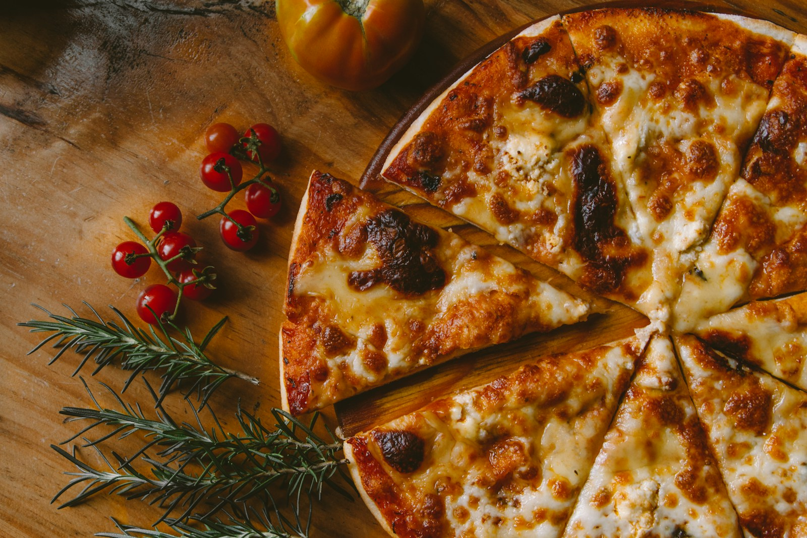

SUA NOITE, COM MAIS SABOR.
HOJE
TEM PIZZA.
Puxa uma cadeira, chama a turma.
O próximo pedaço é por conta da Bocca.
DO CENTRO DE FOZ
PARA A SUA NOITE.↓
PARA A SUA NOITE.↓

02 / DEIXA A NOITE ACONTECER
A melhor parte
é dividir.
Uma pausa no dia. Um filme no sofá. A turma reunida sem hora para ir embora. Sempre cabe uma pizza no meio.
Escolher os saboresA gente divide
a pizza.
A conversa
vai inteira.
SEM COMPLICAÇÃO
Da vontade
ao WhatsApp.
- 01
Escolha seus sabores
Adicione o que chamou sua atenção à seleção.
- 02
Converse com a Bocca
Envie a lista pelo WhatsApp e confirme tamanhos, valores e disponibilidade.
- 03
Combine os detalhes
A pizzaria confirma o pedido, a entrega e o pagamento diretamente com você.
03 / A BOCCA É AQUI
Em Foz.
Perto de você.
Estamos na Rua Bartolomeu de Gusmão, no Centro de Foz do Iguaçu. Veja o ponto exato no mapa e fale com a gente antes de sair.
Abrir no Google MapsVAMOS CONVERSAR?(45) 99103-3399
Pedidos e atendimentoWhatsApp ↗
Horários e entregaConsultar ↗
Veja mais da BoccaInstagram ↗
Localização e avaliações no Google PRONTO. AGORA SÓ FALTA ESCOLHER.